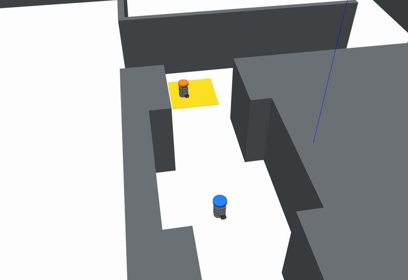
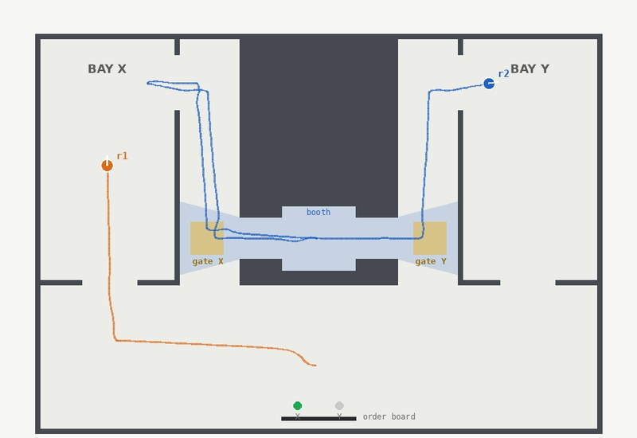
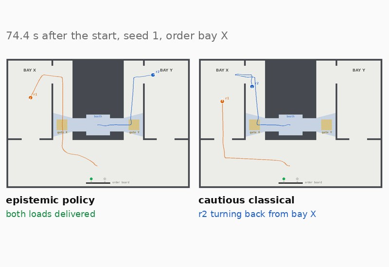
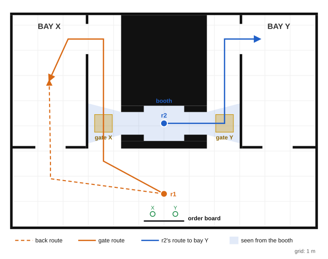

Implicit coordination · knowledge preconditions · epistemic against classical · two robots, no radio · ROS 2
Two robots, two bays and no radio. An order board tells r1, the carrier, which bay its load goes to; r2 must take its own load to the other bay, and may deliver only into a bay it knows r1 will not use. r2 waits in a booth inside the racking, and through two slits it sees two gates and, of r1's routes, nothing else. r1 can reach its bay by a back route that nobody sees, or by a longer route through the gate of that bay, where it can stop in r2's view.
Nothing in the goal asks anyone to know anything: it is that both loads are delivered. The knowledge is in the precondition of r2's delivery, \(K_{r2}\,\mathit{dest}\text{-}x\) for bay Y and \(K_{r2}\,\neg\mathit{dest}\text{-}x\) for bay X. The epistemic planner returns a policy in which r1 takes the longer route, stops in its gate, and r2, watching, learns the order and drives to the other bay. The classical teams plan each robot alone with POPF[5]: r1 takes the back route, and r2, which cannot know the order, either guesses or finds out by driving into a bay and looking.
The policy delivered correctly in 20 of 20 runs, with r2 knowing the order 23.5 s after the start. The classical side is at its strongest: r1 plans its shortest delivery, and the cautious r2 checks a bay and waits only as long as r1 could still arrive, a deadline set from the slowest r1 measured. 20 seeds, half ordering each bay, each run under all three formulations from the same start.
Package gate_signal_demo; policy from eplansys, search by Aletheia, classical plans by POPF through PlanSys2[6]. Full account in The Gate Signal (PDF): the domain, the propositions and their proofs, the classical formulations, the batch and the defects found on the way.
The runs
| take, seed 1, order bay X | r1’s route | r2 knows the order | r1 delivers | r2 delivers | bays, r1 / r2 | makespan |
|---|---|---|---|---|---|---|
| epistemic policy | gate | 23.3 s | 74.4 s | 74.4 s | X / Y | 74.4 s |
| cautious classical | back | 57.7 s | 45.1 s | 168.9 s | X / Y | 168.9 s |
| optimistic classical | back | never | 45.5 s | 62.5 s | X / X, wrong | 62.5 s |
What the runs show

The policy A route chosen to be seen r2's delivery needs it to know the order, and the only way it can come to know it is to see r1 in a gate. The planner routes r1 through its gate on both branches, 2.35 m longer than the back route. See the policy →
Classical planning No classical plan gives the signal r1 planning alone takes the back route, since nothing in its model refers to r2. A joint classical plan sends r2 straight to the right bay, which r2 can execute only if it is told the order. See the formulations →
Evaluation Correct in every run, and faster in expectation The policy delivered correctly in 20 of 20 runs, 79.0 s expected and 85.0 s at worst; the cautious team 113.2 s and 176.2 s. The optimistic team was right in 10 of 20. See the evaluation →Environment
The hall is 12 by 8.4 m. Bay X and bay Y are walled rooms on the west and east sides, each with a door onto the south corridor. Between them a block of racking runs north from the corridor, cut by two passages, one beside each bay, each closed at its north end and opening by a side door into its bay. Inside the racking, between the passages, is r2's booth, joined to each passage by a slit 0.9 m wide at the height of the gate. r1 starts in the south corridor before the order board, a panel with two slots; a glowing post stands in the slot of the bay the order names.

Both robots are TurtleBot3 Burgers with the laser's range set to 8 m, each with its interfaces in its own namespace. Before any simulator run, tools/check_views.py casts r2's 360 rays from its station against the walls and checks what the domain assumes: r1 standing in either gate is hit by five rays, and no point of either back route, of either bay's inside, of the south corridor or of r1's start is hit by any. What r2 sees of a passage it may see, since r1 enters a passage only on its way to that passage's gate. Each robot's drives use the dynamic window controller of the earlier demonstrations over a roadmap of the hall; each observation is made by the robot's own laser and reported to the executor as the event of the action's model that occurred.
The domain
| action | kind | precondition | what r2 observes |
|---|---|---|---|
| read-order(r1) | semi-private sensing | r1 at its start | that r1 read, not what |
| to-gate(r1) | semi-private ontic | r1 at its start, \(\mathit{Kw}_{r1}\,\mathit{dest}\text{-}x\) | that r1 went to a gate, not which |
| back-route(r1) | semi-private ontic | r1 at its start, \(\mathit{Kw}_{r1}\,\mathit{dest}\text{-}x\) | that r1 went, not where |
| enter-bay(r1) | semi-private ontic | r1 in a gate | that r1 went in, not into which |
| watch(r2, r1) | semi-private sensing | r2 at its station, r1 in a gate | which gate: gate X or gate Y |
| go-x(r2), go-y(r2) | public ontic | r2 at its station | everything |
| drop-carrier(r1) | semi-private ontic | r1 in the bay of its order | that r1 unloaded, not where |
| drop-other-x(r2) | public ontic | r2 in bay X, \(K_{r2}\,\neg\mathit{dest}\text{-}x\) | everything |
| drop-other-y(r2) | public ontic | r2 in bay Y, \(K_{r2}\,\mathit{dest}\text{-}x\) | everything |
The actions are event models of dynamic epistemic logic[1], planned over as in[2]. The initial model has two worlds, both designated, one in which the order names bay X (\(\mathit{dest}\text{-}x\)) and one in which it names bay Y; neither robot can tell them apart, and the frame is S5. An ontic action whose outcome r2 must not see needs two designated events with effects, observed fully by r1 and partially by everyone else, a type the library ePlanSys ships does not have; the domain declares it in a library of its own, gate.epddl. No action sends anything. The goal is \(\mathit{delivered}(r1) \wedge \mathit{delivered}(r2)\).
The policy
read-order(r1) e-order-x → to-gate(r1), watch(r2, r1), enter-bay(r1) || go-y(r2), drop-carrier(r1) || drop-other-y(r2) e-order-y → to-gate(r1), watch(r2, r1), enter-bay(r1) || go-x(r2), drop-carrier(r1) || drop-other-x(r2)
Aletheia returns this policy by AO* in 215 expansions, at depth 7, and its validator checks both leaves. The executor dispatches the actions of the two robots that the policy leaves unordered together, marked || above.
Every policy of this domain uses the gate. The goal needs \(\mathit{delivered}(r2)\), and the only events that make it true need \(K_{r2}\,\mathit{dest}\text{-}x\) or \(K_{r2}\,\neg\mathit{dest}\text{-}x\), which hold in neither initial world. r2 tells the two worlds apart only by an event it observes fully whose occurrence differs between them. The read, the drives and the drop of r1 r2 observes partially, and its own moves are the same in both worlds. That leaves watch(r2, r1), whose two events need r1 in gate X or in gate Y, which only to-gate(r1) brings about, and to-gate(r1) needs r1 at its start, which back-route(r1) ends. So on every branch of every policy that reaches the goal, r1 goes through its gate before r2 delivers, and never by the back route. The report gives the proof in full.
Moving so that an observer can infer one's goal is what legible robot motion does for a human watching[4]. Here the observer is the other robot, and the planner derives the route from the precondition r2 has to meet and from what r2 can see, with no notion of legibility in the domain.
Classical planning
r1 alone. r1's classical model has its own goal, its two routes timed from the roadmap, 50.9 s by the back route and 68.0 s through the gate, and nothing about r2. Any plan through the gate can be replaced by the back route and become shorter, so no cost-optimal planner signals, and POPF took the back route in all 40 classical runs.
Both together. A classical planner given both robots and the order plans r1 by the back route and r2 straight to the other bay: no signal is needed, because the plan knows the order. The plan is executable only by a controller that knows it too, and r2's does not. A classical joint plan is a plan for a team that can communicate. A plan that each robot can execute from what it knows is what implicit coordination asks for[3], and finding one means planning over what each robot will know.
r2 without the order. The classical r2 runs one of two formulations, each over POPF in a stack of its own. Optimistic: it plans its delivery as if both bays were free, and POPF sends it to bay X. Cautious: it drives into bay X and looks over it from the side door, again and again until it sees r1 there or until 50 s after the start, the latest r1 could still arrive; the slowest classical r1 measured was in its bay at 44.0 s. It then unloads in bay X, or crosses to bay Y through the booth and unloads there. The cautious r2 is always right and is the strongest classical r2 there is in this hall: it cannot learn the order before r1 reaches a bay, and checking either bay first is the same by symmetry.
Steps and seconds
The domain gives r2 one way to learn the order. Given a second, the look into bay X the cautious r2 uses (gate-signal-look.epddl), Aletheia returns a different policy: r1 by the back route, r2 into bay X, a look, and a crossing to bay Y if r1 is there. That is the cautious classical r2's strategy, found from the knowledge precondition, and it has depth 7, the depth of the gate policy. AO* minimises the actions on a policy's longest branch and has no durations, so it has no reason to prefer either. The batch below does: the gate is faster when the order names bay X, the look when it names bay Y, and the gate in expectation and at worst.
In writing that variant the planner first returned a policy of depth 6, in which r1, standing in bay X, looked over bay X itself. r2 observed the look happen, and since a look in bay X can happen only with the looker in bay X, r2 knew where r1 was. The planner was right about the model; the model let r2 learn from an occurrence it could not see in the hall. The look was restricted to r2.
Evaluation
Odd seeds order bay X and even seeds bay Y, and each perturbs both robots' starts by up to 0.08 m and 8°. Each seed is run under the three formulations side by side, and every mission starts at the same simulated instant. A run is correct when both loads are delivered, r1's into the bay of its order and r2's into the other. The makespan is the later of the two deliveries, in simulated seconds from the start; distances come from the simulator's odometry.
| correct | median, order X | median, order Y | expected | worst | r2 drove, mean | planning | |
|---|---|---|---|---|---|---|---|
| epistemic policy | 20 / 20 | 79.6 s | 78.3 s | 79.0 s | 85.0 s | 6.7 m | 0.15 s |
| cautious classical | 20 / 20 | 166.2 s | 59.4 s | 113.2 s | 176.2 s | 13.4 m | 2.34 s |
| optimistic classical | 10 / 20 | 55.0 s | 55.2 s | 55.6 s | 63.1 s | 6.7 m | 1.51 s |
Expected is the mean of the two orders' means, the makespan when either order is as likely; planning is the median wall-clock time the planners took over a run, all calls together. The policy delivered correctly in every run, and r2 knew the order 23.5 s after the start (at worst 24.1 s). When the order names bay X, the policy was faster than the cautious team in 10 of 10 seeds (exact sign test, \(p = 0.002\)), by 87.3 s (Hodges–Lehmann): the cautious r2 found r1 in bay X and crossed the hall, 10 times in all. When it names bay Y, the cautious team was faster in 10 of 10 (\(p = 0.002\)), by 18.4 s: its first guess was right, and it needs no signal then. The optimistic team is the fastest and delivered both loads into bay X in 10 of 20 runs, every run whose order names bay X (McNemar's exact test against the policy, \(p = 0.0020\)).
Found on the way
Limits
References
Reproduction
python3 tools/check_views.py # what r2 sees from its booth; no simulator python3 tools/make_world.py --seed 1 --out RUN ros2 launch gate_signal_demo gate_signal_launch.py dir:=RUN formulation:=epistemic # or optimistic, cautious bash tools/batch.sh 1 20 BATCH 2 # every seed under all three, side by side python3 tools/analyse.py BATCH # runs.csv and the paired comparison